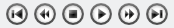
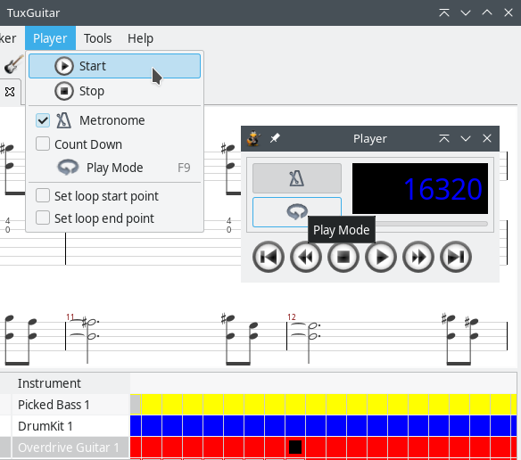
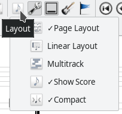

-
Getting started
- The first steps
- Toolbars
- Playing a song
- Making and editing a song
- Tools and settings
Playing a song
Opening an existing song
TuxGuitar currently supports several file formats. Besides its internal .tg format (which is recommended), it can open and play all Guitar Pro formats (.gtp, .gp3, .gp4, .gp5, .gpx, .gp) and also the PowerTab format (.ptb).
You can open a file through the File → Open dialog in TuxGuitar. If you installed TuxGuitar using our regular installation packages, the above file types are associated with TuxGuitar in your operating system, so you can open them directly by clicking on the file in the file manager.
Another way to open a file is directly from an online resource, by using the File → Open URL dialog. If you enter the correct URL of an online file TuxGuitar can open, you can view and play the file in the same manner as if it was opened from a local folder. Of course, you cannot save the file back on the same URL, you can save it only as a local file.
Playback
Using playback controls you can play, stop and pause the playback, but you can also navigate through the song (next/previous measure, beginning/end of a song). During the playback the currently played note will be colored in red, so it is easier to see how the current note is played.

You can find the playback controls in the main toolbar and in the Player dropdown menu. There is also a dedicated player window you can access under View → Show Player.

You can also navigate through the song using the "transporter" in the track table at the bottom of the application window, which is the graphical representation of a song’s tracks. It is automatically scrolled during the playback and using the scrollbar on the bottom of the screen you can view the whole song. You can access the wanted instrument and measure by clicking on the proper rectangle in the "transporter" widget.
The current instrument can be changed by clicking on the instrument name in the track table. Display will be changed accordingly to view the wanted instrument’s notes.
Metronome
Adds an audible click to every beat to help you practice playing to a regular pulse.
Count In
Adds an audible cue at the beginning of the song to ensure a uniform entrance and to establish the song's initial tempo.
Play Mode
There are two different ways to play a song: In "Simple Mode" or in "Training Mode".

Simple Mode
Simple mode allows you to set a constant playback speed. You can play and examine the song with half of the speed, 1% of the original speed or even with the up-tempo. This is achieved by changing the playback percentage to an arbitrary value (50% is half of the speed; 200% doubles the tempo).
You can also select to continuously repeat the song and to only play a piece of the song (Play looped, Loop Range).
Training Mode
Training mode gives you the opportunity to practice with a gradual tempo incrementation. You can choose to start slowly, in only half of a tempo, but in every cycle of the tune to increase the tempo by 5%, getting to the full speed after 10 playbacks. You choose a beginning tempo, ending tempo and an increment (in percentage) that increases the tempo after each cycle.
Views
There are two types of the view: Page Layout or Linear Layout.

Linear Layout displays a track in a single line. It means that on the current sheet is read in the right direction, and the time is represented by the width of current display. Page Layout displays a track as a page of a sheet - when the notes exceed width of the sheet display, they are displayed in the next line. So sheet is read in the direction from top to bottom, and time is represented by the height of the current display (in the case of single track view).
By enabling Multitrack view, in the same line of a layout will be displayed all the instruments. So, if you use Linear layout and enable Multitrack view all the instruments will be one beneath each other and played in the right direction. Using Multitrack view with Page layout can sometimes result in a pretty messy layout.
By enabling the Show Score option, the scores will be displayed above the tabs.
By enabling the Compact view, you can make your tablature look more compact, if you consider it too wide.
You can also change the current view during playback.